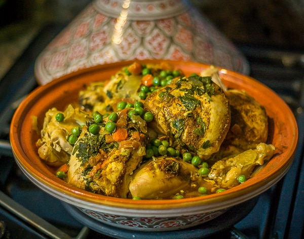

Chicken tagine is a traditional Moroccan dish of chicken pieces braised with spices, garlic, onion, olives, and preserved lemons. It’s company-worthy yet easy to throw together.
It’s a company-worthy dish yet easy enough to throw together on a not-too-busy weeknight. The word tagine refers to the shallow clay vessel with a cone-shaped lid in which the dish is traditionally cooked, but you don’t need one to make it. I use a large cast-iron braiser; a wide Dutch oven or heavy covered skillet will work, too.
Combine the spices in a small bowl and set aside. Zest the lemon.
Combine 1 teaspoon of the lemon zest with 1 minced garlic clove; set aside.
Season both sides of chicken pieces with 2 teaspoons salt and ½ teaspoon pepper. Heat the oil in a large heavy-bottomed Dutch oven or pan over medium-high heat until beginning to smoke. Brown the chicken pieces skin side down in single layer until deep golden, about 5 minutes; using tongs, flip the chicken pieces over and brown the other side, about 4 minutes more. Transfer the chicken to a large plate; when cool enough to handle, peel off the skin and discard. Pour off and discard all but 1 tablespoon of fat from the pan.
Reduce the heat to medium. Add the onion and cook, stirring occasionally, until they have browned at the edges but still retain their shape, 5 to 7 minutes (add a few tablespoons of water now and then if the pan gets too dark). Add the remaining minced garlic and cook, stirring, until fragrant, about 30 seconds. Add the spices and flour and cook, stirring constantly, until fragrant, about 30 seconds. Stir in the broth, honey, remaining lemon zest, and ¼ teaspoon salt, scraping the bottom of the pan with a wooden spoon to loosen any browned bits. Add the chicken (with any accumulated juices) back in, reduce the heat to medium-low, cover and simmer for 10 minutes.
Add the carrots, cover, and simmer until the chicken is cooked through and the carrots are tender-crisp, about 10 minutes more.